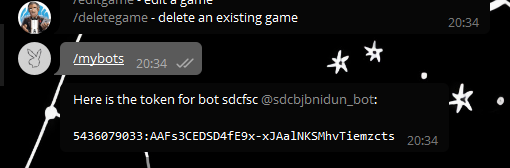
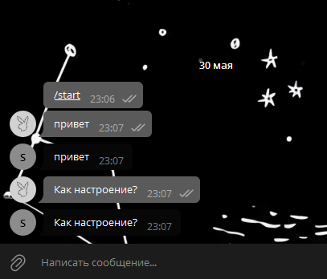

Подготовка
Прежде всего нужно определиться где вы будете писать код. Доступны несколько вариантов:
- Редактор кода (VS text-amber-600, Pycharm, Sublime Text и др.)
- Онлайн компилятор
Советуем установить один из редакторов кода, т.к. он имеет расширенный функционал, встроенные фреймворки и более надежен в использовании.
После того, как вы определились с рабочей средой, необходимо получить токен для своего бота. Для этого:
- Пишем @BotFather
- Выбираем создание нового бота /newbot
- Выбираем как наш бот будет называться
- Придумываем имя пользователя для нашего бота, которое обязательно должно заканчиваться на _bot (@some_new_bot)
- Далее снова пишем @BotFather команду /help и выбираем /mybots
- Из представленного списка выбираем только что созданного и нажимаем API Token
- Тщательно запоминаем (шучу) полученный набор символов
Поздравляю! Мы создали нашего первого бота и получили его токен. Теперь пора приступать к написанию непосредственно кода на Python.
Код
Для того, чтобы работать с ботом на Python, нужно импортировать библиотеку pyTelegramBotAPI. Для этого открываем командную строку и вписываем pip3 install pyTelegramBotAPI.
Дальше создаем “скелет” нашей программы
Сначала импортируем библиотеку telebot, которая предоставляет необходимые команды, и сохраняем ранее полученный токен в переменную TOKEN для удобства.
Создаем новый объект bot, с которым мы и будем работать.
bot.polling() отвечает за то, чтобы бот работал непрерывно и без появления ошибок
Важно! весь код должен находиться до bot.polling()
Теперь поговорим об основных элементах бота — обработчиках сообщений. это функция, которая будет выполняться при получении определённого сообщения. Для того, чтобы из обычной функции сделать обработчик сообщений для бота надо воспользоваться декоратором @bot.message_handler.
Давайте разберемся, что мы с вами написали.
filters — фильтры, определяющие, следует ли вызывать декорированную функцию для соответствующего сообщения или нет. У одного обработчика может быть несколько фильтров.
Рассмотрим основные
- content_types
- commands
Первый фильтр принимает список строк, чаще всего используется аргумент content_types=['text'], который означает, что обработчик будет реагировать на все текстовые сообщения.
Второй вариант, commands, реагирует только на указанные команды. Например обработчик @bot.message_handler(commands=['start', 'help']) вызовется, только если пользователь отправит команду /start или /help.
Для обработчиков сообщений разрешено любое имя функции, поэтому function_name может принимать любое значение. Функция должна принимать не более одного аргумента, который будет сообщением, которое функция должна обработать. Аргумент message имеет все поля перечисленные здесь.
Вот и все! Это и есть весь секрет. Теперь вы научились создавать основную часть бота. Дальше остается лишь оттачивать свое мастерство и знание алгоритмов! Ну а если у кого-то еще остались вопросы, или кому-то нужно еще раз разобраться в материале, предлагаю еще раз пройтись по всем шагам и создать бота, зеркалющего наши сообщения.
Практика
Итак, как и в прошлый раз, мы начинаем с обращения к @BotFather и получаем токен для бота.
Далее снова сохраняем токен и создаем скелет нашей программы
Поскольку нам нужно, чтобы бот зеркалил абсолютно все сообщения, то используем фильтр content_types=['text'].
Теперь обращаемся к методу send_message(), 1-м аргументом передаем чат, в который надо отправить сообщение, 2-м аргументом - то, что нужно отправить, в нашем случае текст самого сообщения.
В итоге у нас получилась такая программа:
Теперь остается только запустить ее, и наш бот заработает!
